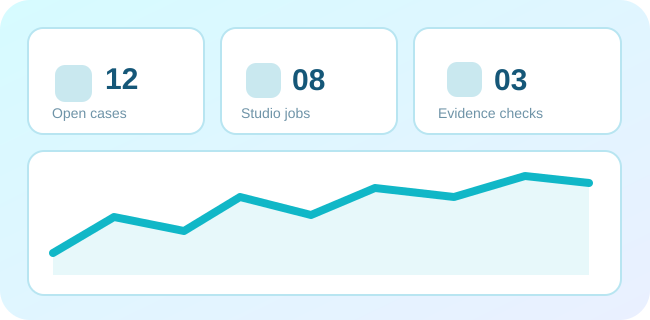

Jede Funktion. Ein überprüfbarer Status.
Diese Tests laufen direkt auf deinem Gerät – ohne Supabase, ohne Patientendaten und ohne externe Eingriffe. Sie unterscheiden funktionierende lokale Technik von noch nicht angeschlossener Hardware.

Browser und lokale Ausführung
Jeder Eintrag enthält ein technisch nachvollziehbares Ergebnis.
Praxis- und Laborwerkzeuge
Funktionale Arbeitsbereiche direkt öffnen und selbst überprüfen.
Hardware und Freigabegrenzen
Ein Browser kann weder Betriebssystemrechte erzwingen noch medizinische oder physische Gerätefreigaben ersetzen.
Online-/Offline-Status ist prüfbar. Die WLAN-Verbindungsart erkennt die native Brücke; Browser zeigen eine Anleitung zum Öffnen der Systemeinstellungen.
Web Bluetooth nur auf unterstützten Browsern. Koppeln benötigt eine bestätigte Geräteauswahl und später das passende Geräteprotokoll.
Technische Schnittstelle im Studio vorhanden; echte Druckbefehle bleiben bis Gate-2-Zulassung und Geräteprüfung gesperrt.
Keine diagnostische oder therapeutische Vollautomation. Freigabe, Patientendaten und kommerzielle Rechte sind gesonderte Voraussetzungen.